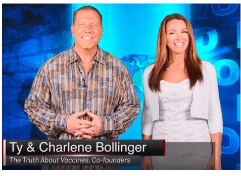
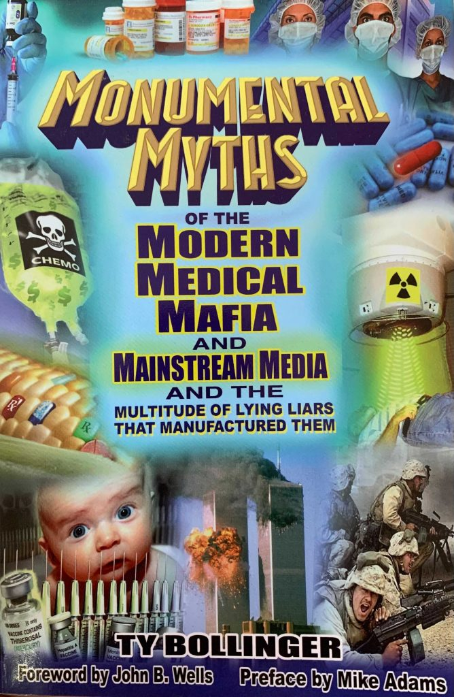
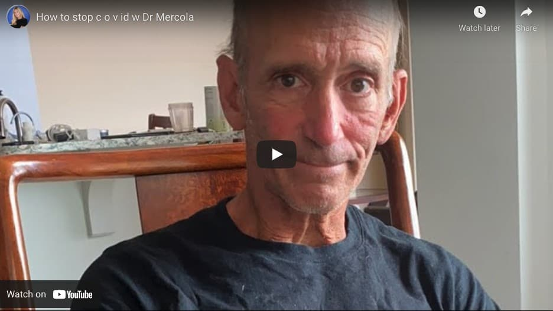

Spreading vaccine fears.And cashing in.
Heather Simpson never thought to question vaccines.Her parents vaccinated her when she was a child, and she got tetanus and flu shots as an adult.
But when she and her husband were thinking about starting a family, she saw an ad for the documentary series 'The Truth about Vaccines,' and 'fear crept in,' she later wrote.
Simpson paid about $200 for the series, which taught her the tenets of vaccine skepticism.
'I left that docuseries just thinking this is it.This is how autism happens.This is how allergies happen,' the 30-year-old Texan said.'How else would it happen?'
When her daughter was born in 2017, Simpson decided not to immunize her.She began posting on social media about her vaccine fears.She then went viral in 2019 for uploading a photo of her Halloween costume of, as she put it, 'the least scary thing she could think of — the measles.'
Scientists widely agree vaccines prevent dangerous diseases and do not cause autism or allergies.But in a few years Simpson had gone from accepting that consensus to preaching against it.And it all started with the documentary series made by Tennessee couple Ty and Charlene Bollinger, who got their start by questioning mainstream cancer treatments such as chemotherapy.
More than 450,000 people signed up to view the series the year it debuted, according to figures the Bollingers posted online, and 25,000 bought copies.At the price Simpson paid, the couple would have grossed $5 million in sales.
For the Bollingers and a network of similar influencers, speaking out against vaccines, including the coronavirus shots, is not just a personal crusade.It’s also a profitable business.
The Bollingers, for example, sell documentaries and books; other influencers hawk dietary supplements, essential oils or online 'bootcamps' designed to train followers in anti-vaccine talking points.They frequently share links to each other’s content and products.Although the total value of anti-vaccine businesses is unknown, records indicate that the top influencers alone make up a multimillion-dollar industry.In 2020, the Bollingers told a court their cancer business had raked in $25 million in transactions since 2014.
In their videos, the Bollingers speak in earnest, unscripted, Southern-accented tones, as if they were friendly neighbors sharing lawn-care tips.Evangelicals with four children, they pepper their messages with Bible verses.They are among the most influential conduits for anti-vaccine messages online, with more than 1.6 million followers on various social media platforms and 2 million they say subscribe to their emails.The Center for Countering Digital Hate, a U.K.-based organization that fights misinformation, has counted them among the dozen personalities responsible for most of the anti-vaccine misinformation on the internet.
'The bottom line is we have such a large following,' Charlene said recently in an interview with conspiracy hub InfoWars.'People are listening to us.They know that we care about them.'
Their latest target: the coronavirus vaccines.
The Bollingers have falsely claimed that the COVID-19 vaccines edit a recipient’s genes.They’ve insinuated that the shots caused an uptick in COVID-19 deaths in Tennessee.They’ve called vaccination 'this abominable COVID shot.'
Anti-vaccine messages from influencers like the Bollingers reach more than their most devoted followers, and are a major reason scientists worry the U.S. will continue to see coronavirus outbreaks.
'The anti-vax and vaccine-hesitant community has been very loud on social media,' said Jessica Malaty Rivera, a science communicator with the COVID Tracking Project who dispels vaccine myths on Instagram.'They’ve had a steady drumbeat of doubt, and we’re just playing catch-up.'
Before he became an outspoken vaccine opponent, Ty Bollinger was a Texas accountant and former bodybuilder wondering why so many of his relatives had died of cancer.
A Baylor University graduate, he was five years into his accounting career and newly married when his 52-year-old father doubled over in pain while eating, as Ty has often recounted.Doctors suspected gallstones but instead during surgery found extensive, cancerous stomach tumors.His father died 25 days later.(The Center for Public Integrity reached out multiple times, but the Bollingers did not agree to be interviewed for this story.This account is based on public records and what the couple has shared online.)
Cancer killed five more of Ty’s relatives, and finally, in 2004, his mother.He began to research the disease at libraries and bookstores.The result was his first book, 'Cancer: Step Outside the Box,' which argued that 'Mother Nature' could treat cancer better than doctors and medications.
His next book, 'Monumental Myths of the Modern Medical Mafia and the Mainstream Media and Multitude of Lying Liars that Manufactured Them,' recounted how he 'woke up' while researching cancer, convinced that federal agencies like the Food and Drug Administration were suppressing information about natural treatments for the disease.A California doctor he’d consulted for his research then sent him a DVD claiming that 9/11 was an inside job.'You’re crazy!'Ty remembered telling the doctor.But he and Charlene watched.'We were sickened by the fact that, for the first time in our lives, we realized that the USA wasn’t what we always thought it was,' he wrote.'Little did we know that many people love being deceived and living in the matrix.'
Bollinger went on in the 2013 book to detail more of his false, conspiratorial beliefs: that HIV tests are meaningless and common AIDS medications are toxic; that planes spew poisonous 'chemtrails' across the sky to control the weather; and that everything from the Oklahoma City bombing to the Boston Marathon bombing to 9/11 were inside jobs meant to strengthen government power.Bollinger also alleged that elites were covering up the true extent of the Fukushima nuclear disaster: 'I’d bet that by 2020, Tokyo is uninhabitable.'(In 2021, central Tokyo is still inhabited by more than 9 million people.)
Bollinger’s new career skyrocketed with a 2015 docuseries, 'The Truth about Cancer.'In addition to raking in millions of dollars in sales, the couple later said all their films had been watched by more than 20 million people combined.A 2016 followup book was a New York Times bestseller.Cancer also became the center of their growing social media empire.More than 1.1 million people now follow The Truth About Cancer on Facebook, and another 500,000 follow the Bollingers via other online pages or social media platforms.
In 2017, the couple launched 'The Truth About Vaccines,' the docuseries Simpson, the Texas mom, watched.The Bollingers framed the documentary as an earnest search for truth from both sides of a debate, but really the episodes strung together dozens of interviews with vaccine skeptics.
Around the same time, the couple began to sell dietary supplements.'[We want to] make sure that you have a reliable source of bioavailable, whole-food-based supplements,' the Bollingers told their customers.But in 2018 the Environmental Research Center, a California environmental group, notified the Bollingers’ supplement company of an impending lawsuit alleging that some of their products contained dangerous amounts of lead, a poison that can cause brain and kidney damage.Shortly after, the Bollingers announced they had parted ways with the supplement business they helped start with a partner and said they couldn’t go into detail due to a non-disclosure agreement.A month later, their former firm agreed to pay $119,500 to settle the California case, without admitting to selling contaminated products.The Bollingers subsequently sealed what they called a 'strategic alliance' with a competing supplement brand, Ancient Nutrition, which they still promote.
In a March article on his vaccines website, Ty Bollinger recommended five substances he said would 'mitigate damage' in those who had already taken certain coronavirus vaccines.The article contained affiliate links for iodine, zinc and quercetin, which suggests that Bollinger likely received a cut of the sales.But the article did not disclose in close proximity to the links that they were advertisements, as required by Federal Trade Commission regulations.The site contains only this general disclaimer if users scroll to the bottom of the page: 'If you purchase anything through this website, you should assume that we have an affiliate relationship with the company providing the product or service that you purchase, and that we will be paid in some way.'
'We’ve already reached millions, but we want to reach billions, because everybody deserves the truth.'
The Bollingers’ work has made them wealthy.Their 10,000-square-foot home with a pool and pool house in rural middle Tennessee is valued at more than $1.4 million.'While we have generated income from our documentary films, we find nothing wrong with making a living,' Ty wrote this year.
In recent months, the Bollingers have increasingly discussed vague, right-wing conspiracies via online videos and platforms such as Telegram, though they keep much of that content off their prominent cancer website.'Italy, it goes through the Vatican.We know that [former president Barack] Obama is in on this with [left-leaning billionaire George] Soros,' Charlene said in a video in January.It was unclear what she was referencing.'Something big is happening.'
And in July of last year, the Bollingers set up a political fundraising committee, the United Medical Freedom Super PAC, to support candidates for public office who want to 'transform the medical and health systems in America.'To date, they’ve used it to raise more than $60,000, Federal Election Commission records show, but have not donated any funds to candidates or other political campaigns.Instead, the PAC has paid out honorariums to various anti-vaccine or right-wing activists — including more than $11,000 to Roger Stone, President Donald Trump’s long-time friend and confidant who was convicted of lying to Congress and pardoned by Trump.
January 6 found the Bollingers outside the U.S. Capitol, speaking at a rally they helped organize, as insurrectionists stormed the building.'We pray for the patriots that are there now inside, they’re trying to get inside that Capitol,' Charlene said on a flag-draped stage in a video that was later aired on CNN.'Lord, use these people to eradicate this evil, these swamp creatures, this cesspool of filth and waste.'(The Bollingers later called the CNN report a 'fake news media hit job.')There’s no indication the Bollingers breached the Capitol building themselves, though vaccine critic and hydroxychloroquine booster Dr. Simone Gold later faced charges for doing so.
For now, the Bollingers continue to hawk their DVDs, post online and speak at conferences, spreading doubt about the coronavirus vaccines.'Our goal is to reach billions,' said Charlene in an April podcast.'We’ve reached millions, but we want to reach billions, because everybody deserves the truth.'
The vaccine-skeptical corners of the internet promote the same names again and again: the Bollingers; Dr.Joseph Mercola, who runs a supplement empire while dispatching near-daily anti-vaccine missives; Erin Elizabeth Finn, Mercola’s 'better half,' who markets her own line of extracts and serums while airing vaccine doubts on her Health Nut News platforms; Dr. Sherri Tenpenny, who offers a $595, eight-week course in anti-vaccine talking points despite a federal judge having found her 'unqualified' to weigh in as an expert witness on a vaccine-related lawsuit ('Television interviews do not an expert make,' he wrote).
Then there’s Mike Adams, 'the Health Ranger,' whose online store offers everything from organic beans to a $439 juicer to a conspiracy-heavy newsletter (a recent headline: 'Their real plan: The vaccinated will die; the unvaccinated will be hunted').And there’s Dr. Rashid Buttar, a popular anti-vaccine evangelist despite being reprimanded twice by his state’s medical board in 2010 and 2019, including for treating autism in a child he had never met with an unproven skin medication.Or Larry Cook, who claims to reach 2 million people every month and whose 'Stop Mandatory Vaccination' site sells memberships for up to $299 per month, accepts advertisements and solicits donations that go to pay his personal bills.Or Dr. Christiane Northrup, who rose to fame with her New York Times-bestselling books on women’s health and menopause and in recent months told her newsletter subscribers that 'powers' have 'suppressed' information on how to prevent coronavirus infection, which should really be done by taking vitamins and cleaning your cell phone.
The CCDH, the misinformation-fighting nonprofit, earlier this year estimated that about 65% of the social media content containing false claims about coronavirus vaccines could be traced back to a dozen influencers, including the Bollingers.Ten of them also sell products to their followers.
'These are old-fashioned snake-oil salesmen,' said Imran Ahmed, CEO of the CCDH.'They are willing to let people suffer death, disease in order to make profits for themselves.'
Northrup, for example, has more than half a million Facebook followers.She posts frequent videos of herself playing the harp, pausing to share details of her life or tidbits of health misinformation.In one recent video, she said without evidence that women who have 'been around' those who have received coronavirus vaccines 'suddenly the entire inside of their uterus just you know comes out,' then discussed the '[artificial intelligence] that has been put in the atmosphere by the dark ones' and an alfalfa bath she took that morning.On her website, she sells her books, audio lectures, her own line of dietary supplements and 'vaginal moisturizers.'She also advertises products, such as 'tea crystals,' for others who pay her for referrals, according to a disclosure on her site.Northrup attended Dartmouth Medical School in the 1970s and continues to introduce herself as a physician.But Maine records show she terminated her medical license in 2015.
Many of the anti-vaccine doctrines that Northrup and others trade in can be traced back to 1998, when British researcher Andrew Wakefield published a now-retracted and repeatedly debunked study linking the measles vaccine to autism.Fears snowballed, notoriously among affluent California parents, but also in other communities, as Somali immigrants in Minnesota and Orthodox Jews in New York began to refuse to immunize their children.Influencers such as the Bollingers and a sprinkling of celebrities embraced the anti-vaccine gospel, and the movement ballooned.A 2019 Gallup poll found that 84% of Americans thought it important to vaccinate children — down from 94% in 2001.Ten percent believed the scientifically discredited claim that vaccines cause autism, and another 46% weren’t sure.
The pandemic helped boost the influence of many of the anti-vaccine movement’s stars.CCDH found that anti-vaccine influencers gained 8 million social media followers in the first half of 2020, bringing their total to nearly 60 million by July.Social media platforms have taken steps in recent months to crack down on some of these personalities, removing certain pages or making them harder to find via searches, but much of their influence remains.
The coronavirus seems to have been good for business, too.'Warning: Due to Coronavirus (COVID-19), we are seeing record demand for this offer,' read a banner on Tenpenny’s website earlier this year, above an ad for a 'hydrated zeolite' spray that promised to 'fight back against heavy metals and toxins' ($79.95 for a 30-day supply).
Anti-vaccine influencers often point to pharmaceutical profits as a reason drugmakers can’t be trusted.But their own messaging is also lucrative.Cook once said he had made $40,000 in one week from sending out referral links to the Bollingers’ vaccines documentary, according to an acquaintance who preferred not to be named.He now sells $99 training videos to teach others how to make money from anti-vaccine messages.'People click over, they watch it, I make money,' he said about a link to an online anti-vaccine docuseries.'So it’s a win-win.'
Mercola, the owner of a major dietary supplement brand who has promoted what he called 'nearly magical' alternative treatments for the coronavirus, through a foundation donated more than $2 million over five years to the leading anti-vaccine nonprofit, the National Vaccine Information Center, tax records show.He claimed in 2017 that his net worth exceeded $100 million, according to a Washington Post investigation.
Public Integrity reached out for comment to all the anti-vaccine influencers mentioned in this article, but only Finn and Mercola responded.
'For a matter of years I ran my website without selling one single product or carrying a single product,' Finn wrote in an April email.'I’ve never taken a single penny in donations like most health sites either (that would include most nonprofit and for-profit websites).Eventually I started a small boutique line because I couldn’t pay my team out of pocket forever.'
'Disagreeing with big pharma and the federal agencies they’ve captured is a detriment to anyone,' Mercola said in a statement.'Placing yourself in the crosshairs of these coordinated attacks is not financially or personally beneficial.'
Northrup did not respond to an email from Public Integrity directly, but posted an online video discussing it and calling the reporter one of 'these people' who think 'everyone can be bought.'
'What’s hard for these demons to believe is that there are those of us like you who are in this for humanity, who are in this to be light workers, who are doing God’s work on the earth,' Northrup said.'What’s in it for us?Our souls.'
Public Integrity requested interviews with individuals who know the Bollingers, including a man public records indicate is related to Ty.Adams, a friend of the Bollingers, then wrote on one of his websites that the reporter was using 'mafia-style' 'journo-terrorism' to promote 'genocidal holocaust' by 'targeting family members' of those in the anti-vaccine movement.Adams also posted the reporter’s email and cell phone number and requested that readers contact her, resulting in a days-long barrage of spam calls and more than 100 vulgar, insulting or threatening messages.The article was cross-posted on several other domains, including InfoWars.Commenters responded with more personal information about the reporter, as well as ideas on how to harm her family: 'I butcher a family as easy as stepping on a roach,' one wrote.
'They HATE the truth because everything they do is rooted in lies,' the Bollingers wrote on their Telegram channel, telling followers to read Adams’ article about the reporter.'Do they not know that they will soon face God?'
Adams’ network of sites has singled out specific journalists on multiple occasions.He once called for a 'website listing all the publishers, scientists and journalists who are now Monsanto propaganda collaborators,' compared them to Nazi war criminals and included a quote that suggested killing 'those engaged in heinous crimes against humanity.'Even his article walking back his original post and decrying violence called a specific journalist a 'shill' and defended the comparison to Nazis.
Anti-vaccine influencers are 'a classic example of bad actors who are proficient in digital spaces, at creating outcomes which are bad for us and society,' Ahmed said.'They react the way you would expect them to.'
Early this year Connecticut mental health counselor Renee Rattray was dismayed to learn a close friend didn’t want to get a coronavirus vaccine.Her friend cited common false conspiracy theories — such as that the vaccines alter DNA or were designed by billionaire Bill Gates to track people — then sent her a video of Mercola interviewing another anti-vaccine influencer.
Rattray eventually gave up on persuasion, even though the friend has a job that requires close proximity to others and has a health condition that makes her more vulnerable to the coronavirus.
'I’m worried about her,' Rattray said.'She doesn’t admit that she’s been influenced by anyone.… The more I push her, the more she pushes back.'
Even when anti-vaccine influencers aren’t able to completely convince listeners, their messages plant seeds of doubt.A March Axios/Ipsos poll showed that a small slice of Americans believe conspiracy theories about the coronavirus vaccines, but between a quarter to half, depending on the question, weren’t sure whether they were true.And those people were less likely to say they would get vaccinated.
'People trying to reduce confidence through misinformation — that’s unfortunate and it’s something that’s sort of hard to fight,' said Ajay Sethi, an epidemiologist at the University of Wisconsin-Madison School of Medicine who teaches a class to future doctors on conspiracy theories.He urges his students to be compassionate and not condescending, since all of us are vulnerable to misinformation when it seems to confirm our prior beliefs.'It’s all innuendo, but it’s wrong, and it does spread like wildfire.'
Some epidemiologists are optimistic that even if too many people refuse the vaccine for the U.S. to reach full herd immunity, the nation will soon be able to immunize enough people to minimize the disease’s spread.
'The more immunity we get, the better,' said Dr. Monica Gandhi of the University of California San Francisco School of Medicine.
Half of Americans have received at least one dose of coronavirus vaccine so far, according to the Centers for Disease Control and Prevention.
Scientists say it’s still important to reach those reluctant to get a coronavirus vaccine.Pockets of unvaccinated people could still see outbreaks, endangering the immunocompromised and those who are unable to be inoculated for medical reasons, such as those allergic to a vaccine ingredient.And the more chances the virus has to spread, the more opportunities it has to mutate.
Experts say that means they must reach the reluctant from all angles — talking about the safety data behind the vaccines, pushing back against conspiracy theories, emphasizing the years of scientific study behind the shots — while avoiding condescending or strident tones.
'It requires consistent messaging,' Malaty Rivera said.'It also requires a lot of empathy.'
Simpson is one person who has changed her mind.She reevaluated her distrust of science after she was hospitalized for endometriosis.'The western medicine they gave me helped me so much,' she wrote on Facebook.'I realized many anti-vaxxers are anti-vax based on the theory that scientists and doctors are in on a conspiracy to kill or maim children for money.It dawned on me that I definitely don’t believe that.'
Simpson said she lost three of her best friends since she posted on Facebook about coming around to vaccines.But other friends stuck by her side through her 'anti-vax thing' for the past few years, patiently answering her questions and allaying her fears.
'It was people who actually cared about me and my kid,' she said.'That helped me the most.'
In April, she got her first dose of Pfizer’s coronavirus shot.And she’s started taking her daughter to receive her childhood immunizations.
Posted On: 2021-06-08T00:00:00
Posted By: Liz Essley Whyte



Content Date: 2021-06-08
Download Date: 2021-09-16
Document ID: L0C04G5YO